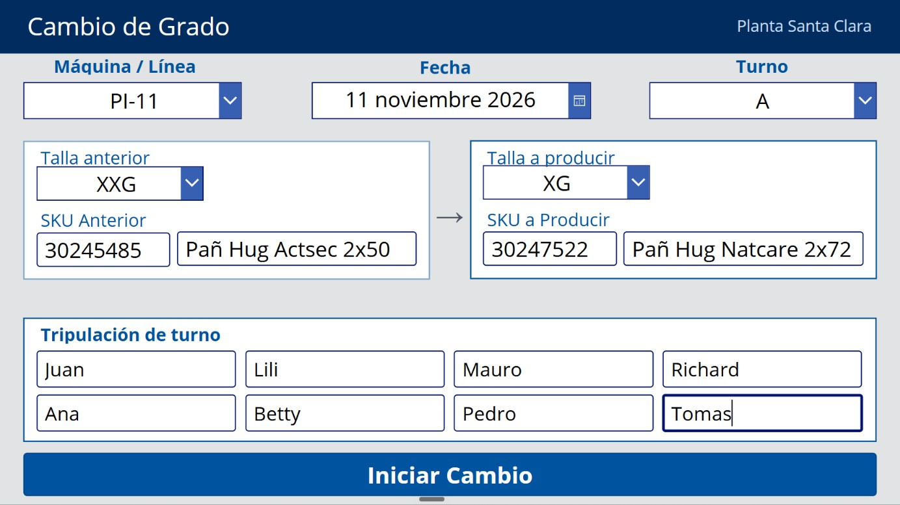
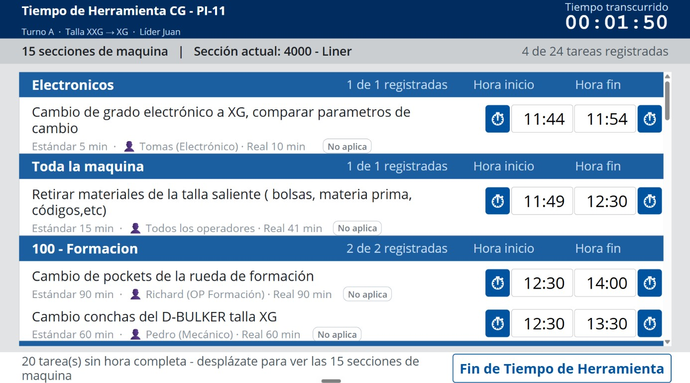

App en Power Apps · Tiempo de Herramienta CG


ContextoDurante un cambio de grado la máquina se detiene y el equipo ejecuta decenas de tareas en distintas secciones. No existía un registro en tiempo real de la duración de cada tarea.
Qué hiceAplicación en Power Apps que digitaliza el Gantt de cambio de grado. Cada tarea se registra desde piso con hora de inicio y fin, responsable y tiempo real frente al estándar, mientras un cronómetro mide la duración total del cambio.
ResultadoTrazabilidad de todas las tareas del cambio. El equipo identifica en tiempo real las tareas pendientes y las que exceden su estándar, lo que permite controlar los tiempos y enfocar las mejoras.
Herramientas